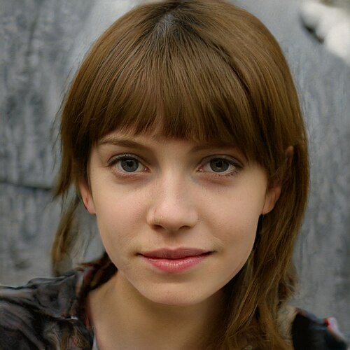
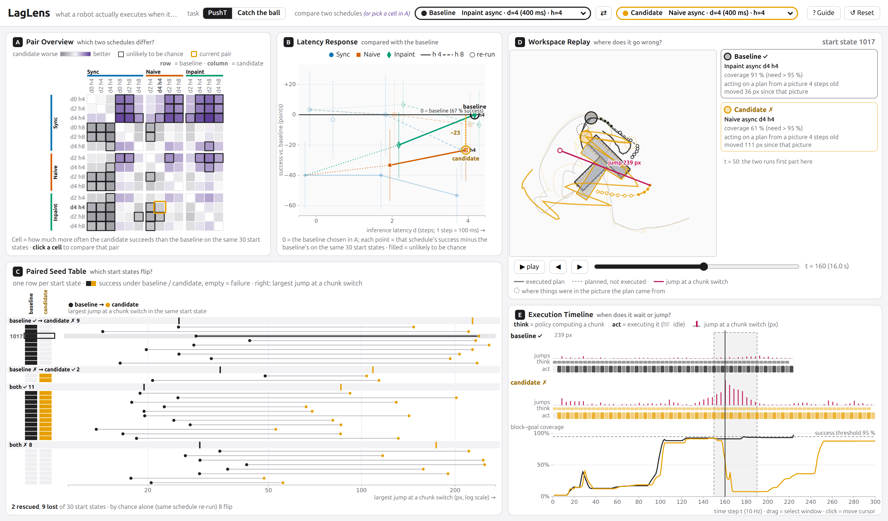
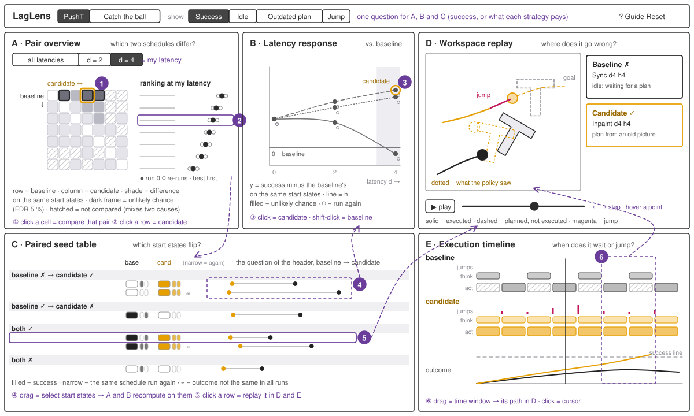
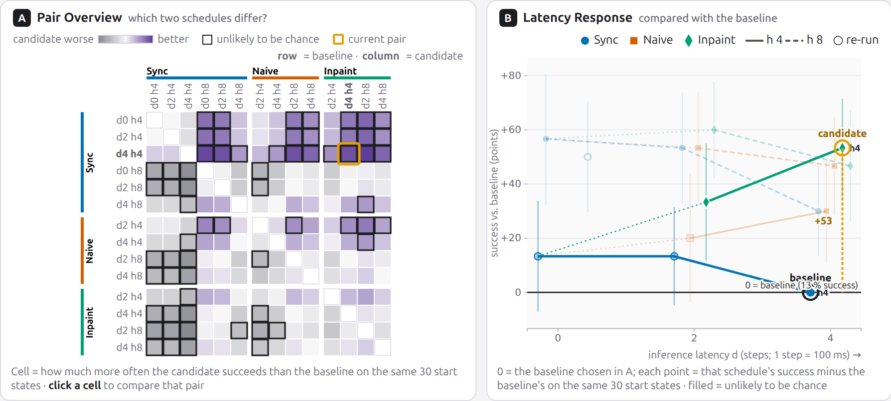
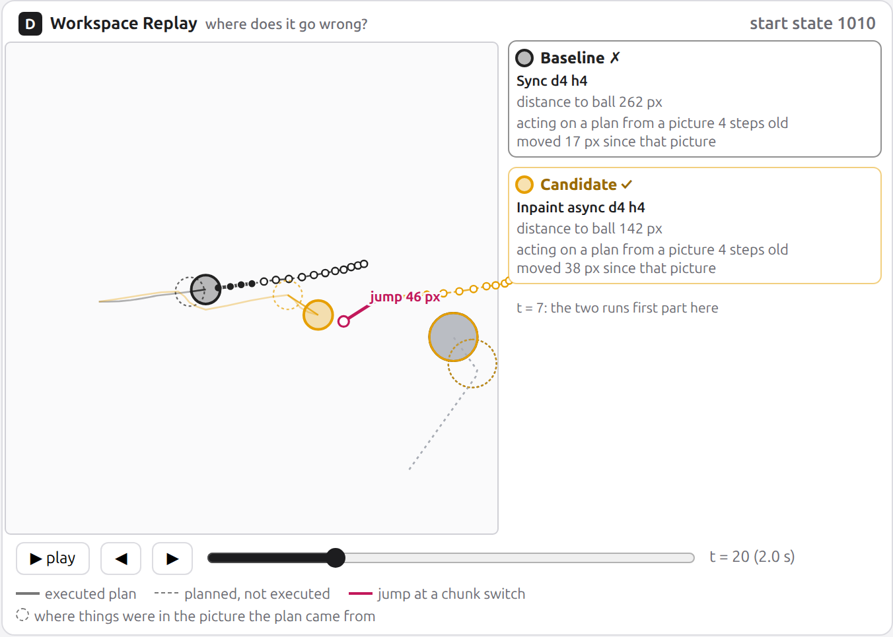
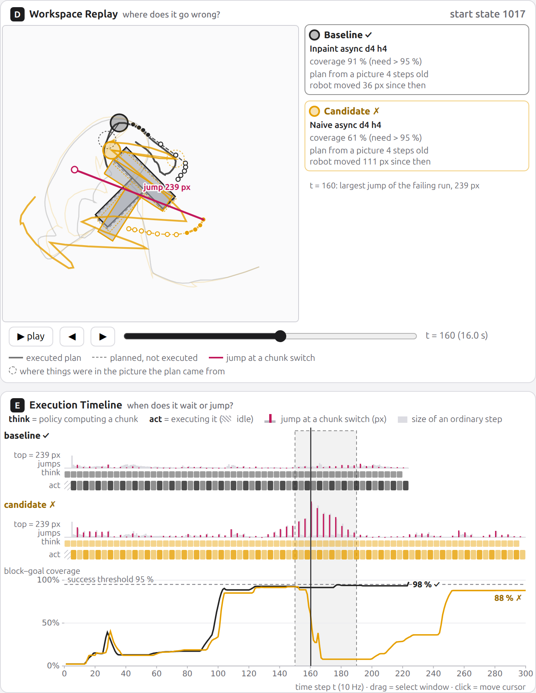
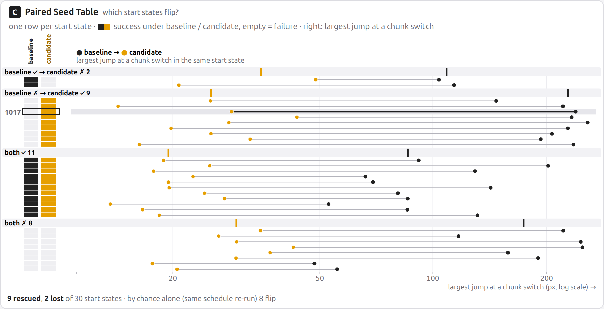

Source. We generated the data ourselves (no public dataset logs per-inference chunks). In the simulated PushT task a round pusher must push a T-shaped block onto a fixed T-shaped goal.
The pretrained lerobot/diffusion_pusht Diffusion Policy turns the last 2 camera frames into a chunk of 16 actions (2-D target positions) by removing noise from a random start (10 DDIM steps, CPU, 10 Hz: 1 step = 100 ms), so outcomes are stochastic. A schedule = strategy × latency d × horizon h:
sync (hold still for d steps, then execute h actions), naive async (keep executing the old chunk while the new one is computed, then switch and skip its d outdated actions)
and inpaint async (as naive, but the new chunk is generated with the already committed actions held fixed, so it continues the old plan; a training-free approximation of Real-Time Chunking).
We use d ∈ {0, 2, 4} × h ∈ {4, 8, 11}: 21 schedules (async at d = 0 equals sync). h = 11 is the longest horizon that fits the 16-action chunk at every latency (1 + d + h ≤ 16). Every schedule is run three times from the same start states (run 0 and two re-runs with other sampling noise), so the interface can show how often an outcome changes by chance. Start states are the first 30 seeds (1000–1029, fixed before looking at outcomes); a first grid of 46 schedules × 50 seeds was too dense to read and is kept only as raw logs.
Catch the ball (ours) is a second task in which the world keeps moving: the same pusher must touch a ball (radius 25 px) that rolls at 42–100 px/s and bounces off the walls, within 80 steps (8 s). Its policy is a small Diffusion Policy (MLP denoiser, the same 16-action chunks) that we trained in 4 min on CPU from 4,000 scripted interception demonstrations; ball size and deadline were calibrated on separate seeds (5000–5099) before any schedule with latency was run. Both tasks share seeds and schedules.
Dataset type: a multidimensional table of episodes (3,780 items over both tasks × 23 attributes), each linked to two temporal tables, steps (183,282 items) and chunks (25,805 items, each with 16 predicted 2-D actions), and to a 2-D spatial field (512 × 512 px workspace); 26 MB of JSON, lazy-loaded per schedule. Keys: task, strategy, latency, horizon, replicate (→ schedule), seed (→ episode), t (→ step), chunk id (→ chunk). Everything else is a value.
| Attribute | Type, order | Levels / range | Meaning | Attribute | Type, order | Range | Meaning |
|---|---|---|---|---|---|---|---|
| strategy KEY | nominal | sync, naive, inpaint | chunk replacement rule | coverage_final · dist_final | ratio ↑ · ↓ | 0.00–0.99 · 31–467 px | T-block/goal overlap (PushT) · pusher–ball distance (Catch) |
| latency d KEY | ordinal (ratio) | 0<2<4 steps | inference delay | idle_frac | ratio ↓ | 0.00–0.60 | share of steps standing still (what sync pays) |
| horizon h KEY | ordinal (ratio) | 4<8<11 steps | open-loop actions per chunk | think_motion_mean / max | ratio (px) ↓ | 0.0–312.4 / 0–606 | robot motion while the plan is computed (outdated plan: what async pays) |
| replicate KEY | ordinal | 0, 1, 2 | run 0 and two re-runs | jump_mean / max | ratio (px) ↓ | 0.0–489.8 / 0–1016 | jump at a chunk switch (what naive async pays) |
| seed KEY | nominal | 1000–1029 (30) | paired start state | steps_to_success | ratio ↓ | 74–300 · 10–80 | time to finish (null if failed) |
| success | nominal (binary) | 0, 1 | PushT: coverage > 95 % in 300 steps; Catch: touch in 80 | jerk · path_len · n_inferences · … | ratio | 1.3–560.4 · 95–7151 · 1–75 | smoothness · distance · # chunks · # switches · staleness |
Derived metrics. Jump: at every switch from chunk k to k+1, the distance between the first action executed from k+1 and the action k had planned next. Outdated plan: for every executed chunk, how far the robot moved between the camera picture the chunk was planned from and the step it was ready. Idle: share of steps in which the robot holds still while the policy thinks (≈ d/(h+d) for sync). Step values: pusher x, y and block x, y, θ (PushT) or ball x, y (Catch), action, chunk id, index in the chunk, age of its picture, held (idle step), coverage or distance.

Goals/needs: choose strategy and horizon for a real arm whose remote GPU server needs ≈ 400 ms to return a chunk; explain why episodes fail, with per-episode evidence aligned with what the policy planned.
Pain points: only success tables and videos; cannot tell whether a failure came from waiting, an outdated plan or a jump, or was just chance; real-robot reruns are expensive.
Goals/needs: set a default strategy for the async serving stack; know whether a difference is real or a few lucky seeds.
Pain points: papers report curves for other robots; no shared vocabulary with researchers. Difference: systems vs. policy expertise; aggregate (T1, T2) vs. episode-level (T3, T4) questions.
Portraits: public-domain StyleGAN images (Wikimedia Commons); the people do not exist.
| # | Action → target | Why | Expected outcome |
|---|---|---|---|
| T1 | Compare → trends of success and of each strategy's cost (idle, outdated plan, jump) across schedules | pick a schedule for the latency the lab actually has | a ranking at one latency; differences separated from chance |
| T2 | Locate → outliers: start states whose outcome flips between a baseline and a candidate schedule | aggregate rates hide which situations break; paired start states isolate the schedule effect | a set of flipping start states, with how often each flip repeats |
| T3 | Identify → features in time and space: where waiting, outdated plans and jumps occur in a flipped episode | diagnose the failure mechanism, not just its rate | a causal hypothesis tied to specific chunks |
| T4 | Discover → correlation between jumps at chunk switches and the outcome over paired episodes | test the claim that failures come with larger chunk-boundary jumps | evidence for or against a strategy, per start state |

Design goal: make the cost of each strategy visible, and separate it from chance. Sync pays with time (idle 51 % of the steps at d4 h4 in PushT), both async strategies with outdated plans (the robot moved 44 px (naive) and 31 px (inpaint) between the picture and the plan, vs. 11 px for sync), naive async also with jumps (mean 40 px per switch vs. 8 px for inpaint). The header asks one question for A, B and C (show: Success · Idle · Outdated plan · Jump) and switches the task. Because one run of 30 start states is noisy, every schedule was run three times; the re-runs appear as hollow marks in A and B and as narrow cells in C, so the analyst sees the size of chance next to every difference. Comparison rule: of the 210 pairs of the 21 schedules, A compares the 102 that have one reading: the same latency (a choice the analyst can make), the same strategy and h at two latencies (what more latency costs), and any schedule against d = 0 at the same h. The other 108 differ in latency and in strategy or h, so a difference has two possible causes; they are hatched and cannot be chosen. Iteration: earlier versions (header drop-downs for the pair, tabs, a 15-schedule outcome matrix, more hues) were judged too complex or invited trying every combination; the pair is now chosen only from what A shows (rationale: docs/design_rationale.md).
| View (task) | Idiom, marks & channels — why | Interaction |
|---|---|---|
| A Pair Overview (T1, T2) | Matrix baseline (row) × candidate (column), ordered strategy → h → d with strategy bands; cell colour = candidate minus baseline on the same start states (diverging purple–grey; purple is used nowhere else); dark frame = unlikely to be chance (success: exact McNemar test on the flipping start states, Benjamini–Hochberg at 5 % over the 102 compared pairs of a task; costs: 95 % interval of the paired difference excludes 0); hatched = not compared. Opens at the analyst's latency d = 4 (12 × 12; all 21 on demand). A ranking strip lists the 9 schedules at that latency by the mean of their three runs (filled = run 0, hollow = re-runs). | hover = rates, rescued / lost start states, q, re-run agreement; click a cell = that pair everywhere; click a ranking row = candidate; latency filter. |
| B Latency Response (T1) | Line chart: x = latency d on its true scale, y = success minus the baseline's on the same start states (position on a common scale); hue + shape = strategy, dash = h; filled = unlikely chance, dashed outline = not compared with this baseline, small hollow = re-runs; band = my latency. | click = candidate, shift-click = baseline; legend hover; follows the selection in C. |
| C Paired Seed Table (T2, T4) | Table-Lens-like rows, one per start state, grouped by baseline → candidate outcome (rescued, lost, both ✓, both ✗); outcome cells (filled = success; baseline black, candidate orange) with two narrow cells for the re-runs and ≈ where they disagree; a dumbbell per row of the cost asked in the header (for Success, the cost that separates the pair), baseline → candidate, band ticks = medians; footer: how many flips repeat in all runs and how many a plain re-run flips. | click a row = replay it; brush rows = select start states (A and B recompute on them). |
| D Workspace Replay (T3) | One map at true geometry with both runs superposed (baseline black, candidate orange): executed path solid, planned but not executed dashed, latest jump as a magenta segment, a dotted outline of what the policy saw; two cards state in plain words what each run is doing (“idle: waiting for the plan”, “robot moved 111 px since then”). | play / scrub / arrow keys; hover a planned point; E's window highlights the path. |
| E Execution Timeline (T3) | Gantt lanes on a shared time axis: per run a think track and an act track (chunks, hatched = idle) and a jump track (magenta bar per switch, grey = ordinary step size); the outcome curve below (coverage or distance, with the success line). | brush a window (→ D), hover a chunk (→ its plan in D), click = cursor. |

Hue has one meaning: baseline near-black, candidate orange (identity); sync blue, naive vermillion, inpaint green (strategy, always with ●■◆); magenta = jump; purple = “candidate better” in A; all else grey (CVD-checked; baseline/candidate ΔEOK ≥ 48). Each view keeps one encoding job and a one-line key; definitions are in the guide and the tooltips. Sketch → implementation: the sketch was redrawn after the redesign and is implemented as drawn; the proposal sketch (4 views, header pickers) is kept in slides/assets/.
src/): plain ES modules + d3.js v7.9.0 only. One shared state object with a d3.dispatch bus; each view re-renders only for the state keys it depends on. Per-schedule logs are fetched lazily and indexed once, so scrubbing stays interactive. URL parameters reproduce any view state (used for every figure here).scripts/): generate_rollouts.py runs all seeds of a schedule in lockstep with one batched diffusion call (CPU, ≈ 2 min per schedule); generate_catch.py trains and runs the Catch policy; build_dataset.py derives the metrics; verify_dataset.py checks the ≥ 100 items / ≥ 6 attributes requirement. Every result quoted in the case study is computed from the data files by build_report.py.ui_test.py runs 74 interaction checks in headless Chromium and fails on any console error (all pass). It recomputes the framed cells of A independently from episodes.csv (exact McNemar + Benjamini–Hochberg) and compares them with the interface.Mara's server adds ≈ 400 ms (d = 4). She opens LagLens on PushT; A opens at d = 4, the latency she has.

build_report.py from the same data.


Outcome. For PushT at d ≈ 4, Mara avoids sync with a short horizon; with h ≥ 8 the strategy makes no difference she can show beyond chance, and she reports only differences that A frames. For moving objects (Catch) she recommends async at any horizon, and inpainting where jumps matter. She gives Arjun the re-run flips as the chance level to expect from 30 start states.
Two simulated tasks; the Catch policy is small and trained on scripted demonstrations, and the ball ignores contact, so the task isolates the cost of acting late in a moving world rather than modelling a real application. Latency is quantised to 100 ms steps, and h ≤ 11 because a chunk has 16 actions. The inpainting strategy is a training-free approximation of RTC; a 10-step DDIM schedule replaces the original 100-step one for CPU feasibility. Tests compare run 0 of each schedule (the re-runs serve as the chance yardstick); with 30 start states, small differences cannot be established, as the 88 of 102 compared PushT pairs without a frame show. Schedules share the start states but not the sampling noise (the random stream depends on the schedule and the batch), so every paired difference contains sampling noise; the re-runs show how much.
This project was built with Claude Code (Anthropic, Claude Opus 5.5), directed and reviewed by the student. Written by AI: the literature survey and topic comparison, all data-generation and preprocessing scripts (including the Catch-the-ball task and its policy training), the complete interface code in src/ (d3.js), the tests, the proposal slides and sketches, the personas, and this report's text, figures and screenshots (produced by operating the interface through scripted states); separate AI agents reviewed the interface several times. Human: topic choice among AI-proposed candidates, design requests (a less cluttered redesign focused on sync vs. async; a second task that shows the advantage of async; re-runs of every schedule; choosing the pair only in the overview; the ranking strip; longer horizons), deployment approval, review. Numbers are filled in automatically from the data files. External code, data and images are listed below and in docs/references.md; a dated log is in docs/ai_disclosure.md.
[1] Zhao et al. Learning Fine-Grained Bimanual Manipulation with Low-Cost Hardware (ACT). RSS 2023. [2] Chi et al. Diffusion Policy: Visuomotor Policy Learning via Action Diffusion. RSS 2023. [3] Black et al. π0: A Vision-Language-Action Flow Model. 2024. [4] Black, Galliker, Levine. Real-Time Execution of Action Chunking Flow Policies (RTC). NeurIPS 2025. [5] Shukor et al. SmolVLA (asynchronous inference). 2025. [6] Lugmayr et al. RePaint. CVPR 2022 · Song et al. DDIM. ICLR 2021. [7] Munzner. Visualization Analysis and Design. CRC, 2014 · Okabe & Ito colour palette. [8] Cleveland, McGill. Graphical perception. JASA 1984 · Gleicher et al. Visual comparison for information visualization. Inf. Vis. 2011. [9] Rao, Card. The Table Lens. CHI 1994 · Weaver. Cross-filtered views. TVCG 2010 · Plaisant et al. LifeLines. CHI 1996. [10] McNemar. Note on the sampling error of the difference between correlated proportions. Psychometrika 1947 · Benjamini, Hochberg. Controlling the false discovery rate. JRSS-B 1995. Software: d3.js 7.9.0 (ISC) · LeRobot 0.6.1 and the lerobot/diffusion_pusht checkpoint (Apache-2.0) · gym-pusht (MIT) · PyTorch (BSD) · diffusers (Apache-2.0) · Playwright (Apache-2.0).